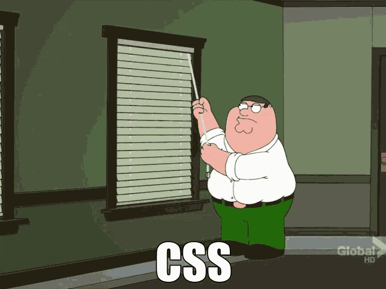

Modern (and hopefully Accessible) CSS Architecture
...with CSS Atomic APIs

Emiliano Pisu
Design Engineer,
Sensei & Co-Host
@ Dev Dojo IT
 linkedin.com/in/pixu1980
linkedin.com/in/pixu1980
 github.com/pixu1980
github.com/pixu1980
codepen.io/pixu1980
linkedin.com/company/dev-dojo-it/
youtube.com/@devdojo_it
twitch.tv/devdojo_it
@devdojo_it
We can't talk about "architecture"
without talking about Design Systems
Is your Design System actually a System …or just a handful of ideas?
What is a Design System?
A Design System is a shared
language used to define and
collect a set of guidelines
A Design System is a
cultural infrastructure for the collaboration between teams
Why do we need an
Accessible Design System?
- Color contrasts and guidelines for visibility
- Spacing and grid systems for clear structure
- Typography and iconography for legibility
- Visual modes and responsive design guidelines
- Motion guidelines, with reduce motion fallbacks
What are we going to
talk about today?
Theory behind the approach
- CSS Custom Properties
- CSS Layers
- Update the Cascade
Atomic Design Principles
-
Un-packing Atoms
(Protons, Electrons and Neutrons) - Atoms
- Molecules
- Organisms
How are we going to feel
at the end of the day?
not like him...
... I'm promise 😄!!!
What we need first it's a
Lean approach
The rules of Lean Web
#2 - You do NOT talk about Lean Web.
#3 - …
…just kidding 🤣!
#1 - Minimalism
Minimize the use of visual and architectural overhead, always following the paradigm HTML 1st, CSS 2nd and JS 3rd
#1 - Minimalism
#2 - Adoption of the Platform
Learn to combine and make the most
of native APIs and methods of the core web technologies is simpler and more performant
than using external frameworks and libraries
#2 - Adoption of the Platform
See the Pen HTML + CSS accordion by pixu1980 (@pixu1980) on CodePen.
#3 - Inclusivity
(The Web is for Everyone!)
Creating inclusive applications means
guaranteeing a smooth experience for everyone:
for people with disabilities, or a slow
connection, or a low-powered device
#3 - Inclusivity
(The Web is for Everyone!)
See the Pen HTML + CSS accordion + JS for accessibility by pixu1980 (@pixu1980) on CodePen.
#4 - Sustainability and Performance
Every byte has an environmental cost!
We strive to reduce the energy consumption
of our products by optimizing resources and
reducing complexity; it is an ethical duty
and a necessity for the future of the web
#5 - Continuous Iteration
Improvement is a never-ending process:
we monitor, gather feedback
and continuously optimize to
give users the best experience,
iteratively reducing waste and inefficiencies
Modern design systems are stunning, sophisticated, scalable... and expensive
Modern CSS resets often
discard browser defaults entirely
Introducing complexity,
inconsistency, and technical debt
In some way we waste out efforts re-building what's already there, just less consistent... and too often less accessible
Does it makes sense resetting CSS in 2025?
Why CSS resets were born?
- Early browsers had inconsistent default styles
- Margins, paddings, font sizes varied wildly
- Resets ensured a clean and predictable baseline
What does a CSS reset?
- Erase all default styles
- Force to re-apply needed styles
- Gain control over layout and spacing
- Ensure consistent rendering across browsers
What are the main concerns with CSS Resets?
Hidden costs of CSS resetting already working stuff
- Removes or reduces accessibility defaults for users who rely on keyboards navigation
- Every “zeroed” element must therefore be redefined, adding un-useful redundancy
- Technical and Design debt at the same time, by adding third party deps which must be overridden
- Loss of useful defaults (e.g. system colors, typography, spacings, focus styles, interaction behavior)
Takeaway
CSS resets were essential in the past, today we have better tools... and better defaults
Maybe the leanest, fastest, most accessible UI kit is already in your browser, it just needs some style!
Semantic HTML is power
- Structure, meaning, and accessibility baked in
- Assistive technologies understands your layout
- HTML is a base component system providing accordions, dialogs, popovers and many more for free, make it yours!
Modern CSS evolving everyday
- Allows layering, nesting, scoping, targeting, transitioning (even between routes)
- User agents are improving at every release, and their default styles are converging over time
- Focus indicators and roles come out of the box, no JS needed for basic interactions
The Browser’s Hidden
Design System
A crude, mostly undocumented,
foundational design system: but real!
System Colors
Natively accessibile color palette derived from OS colors, reactive to system settings, including accent-color- Canvas
- CanvasText
- LinkText
- VisitedText
- ActiveText
- ButtonFace
- ButtonText
- ButtonBorder
- GrayText
- Field
- FieldText
- Highlight
- HighlightText
- Mark
- MarkText
- SelectedItem
- SelectedItemText
- AccentColor
- AccentColorText
- Canvas
- CanvasText
- LinkText
- VisitedText
- ActiveText
- ButtonFace
- ButtonText
- ButtonBorder
- GrayText
- Field
- FieldText
- Highlight
- HighlightText
- Mark
- MarkText
- SelectedItem
- SelectedItemText
- AccentColor
- AccentColorText
Type Scale & Spacings
Heading elements from <h1> to <h6>, paragraphs and all other phrasing elements follow a visual hierarchy, spacings reflect an implied scale and rhythmHeading 1
Heading 2
Heading 3
Heading 4
Heading 5
Heading 6
Paragraph
Focus Styles & User Input
Native UI elements that adapt to platform conventions, keyboard-focused elements get visible outlines out of the boxTakeaway
Don’t "fight" the browser anymore, embrace it!
Attributes utilities
Attributes??
instead of Classes??
Modern HTML and CSS gives us the tools to do this elegantly
A class selector and an attribute selector has exactly the same specificity
Why attribute utilities matters?
- Declarative, readable, and native to HTML
- Separate intent from implementation
- Reduce visual noise in markup
- Consistent, scalable UI state and theming
Look... our HTML is already full of attributes, at least... it should be!
So why not use them for CSS selectors?
<html data-theme="dark">
<head></head>
<body>
<button disabled aria-label="Close modal">x</button>
<input type="email" required placeholder="Your email" />
...
</body>
<style>
[data-theme*="dark"] { ... }
[aria-label] { ... }
[type="email"] { ... }
</style>
</html>
CSS attr() function allows to get the value of an HTML attribute as a string
<div title="This is the title"></div>
<style>
div::after {
content: attr(title);
}
</style>
Unfortunately, this was traditionally limited to the CSS content property
Do you know CSS attr() function is about to get a game-changer update?
What's new with attr() function?
<element attr="value"></element>
<style>
element {
property: attr(attr type(<type>), fallback-value);
}
</style>
Example: Grid Control
<div column-start="1" column-end="3">
this is the div content
</div>
<style>
div {
grid-column-start: attr(column-start type(<integer>), 1);
grid-column-end: attr(column-end type(<integer>), -1);
}
</style>
Use attr() to control grid layout via HTML attributes
Example: Dynamic Font Sizes & Colors
<div font-size="5em" text-color="rebeccapurple">
Hello World!
</div>
<style>
div {
font-size: attr(font-size type(<length>), 1em);
color: attr(text-color type(<color>), black);
}
</style>
Set font size, colors (or whatever) dynamically using attributes
Better to use data-* attributes?
- Virtually prevents conflicts with standard attributes
- Provides a clear namespace for custom data
- Accessible via JavaScript through dataset
CSS Custom Properties are supported as well
<button data-color="rebeccapurple">
Click me!
</button>
<style>
button[color] {
--button-color: attr(data-color type(<color>), Canvas);
background-color: var(--button-color);
}
</style>
Pass
attribute values to custom properties for broader usage
Supported types include: angle, color, custom-ident, image, integer, length, length-percentage, number, percentage, resolution, string, time, transform-function...
...unlocking infinite possibilities with typed attributes:
- Content-first web design
- Declarative, readable, scalable
- No spaghetti css classes
- Reduced dependency on JS frameworks
No JS. No classes.
Just semantics and style.
Takeaway
We’re entering an era where HTML attributes will become the new interface for UI logic, and CSS will finally treat them as first-class citizens.
classless CSS
What is classless CSS?
Less complexity, more semantics, no classes, just pure HTML elements and selectors
Leverage browser defaults instead of override their behavior, style is inferred from semantics
Less DOM noise, better scalability, providing accessibility and performance out of the box
Use attributes like helpers and utilities
Popular Classless Frameworks
- Pico.css - beautiful defaults & theming
- Water.css - zero-config elegance
- Almond.css - opinionated and light
Examples
CSS Custom Properties
--* (MDN docs)
Introduced by Firefox in July 2014,
and fully supported across browsers
since April 2017
Centralizing values
:root {
--text-color: #34eadb;
--font-size: 16px;
}
body {
color: var(--text-color);
font-size: var(--font-size);
}
Flowing with the cascade
:root {
--text-color: #34eadb;
--font-size: 16px;
}
body {
--font-size: 18px;
color: var(--text-color);
font-size: var(--font-size);
}
Dynamic and Conditional overrides...
:root {
--text-color: #202020;
--background-color: #efefef;
}
@media (prefers-color-scheme: dark) {
:root {
--text-color: #efefef;
--background-color: #202020;
}
}
body {
color: var(--text-color);
background-color: var(--background-color);
}
...the same goes for Responsive
:root {
--padding: 8px;
}
@media (min-width: 600px) {
:root {
--padding: 16px;
}
}
.container {
padding: var(--padding);
}
Javascript interaction
Common js "CRUD" operations
with CSS custom properties
Writing a variable to an element (CRUD)
const button = document.querySelector('button');
// sets the "--text-color" value
// to the element's CSSStyleDeclaration
button.style.setProperty('--text-color', '#e74c3c');
Writing a variable to :root (CRUD)
const root = document.documentElement;
// sets the "--text-color" value
// to the root element's CSSStyleDeclaration
root.style.setProperty('--text-color', '#e74c3c');
Reading a variable from an element (CRUD)
const button = document.querySelector('button');
// gets the "--text-color" value
// from element's CSSStyleDeclaration
//! may be null-ish if the variable
//! is not defined on the element itself
button.style.getPropertyValue('--text-color');
// gets the "--text-color" value
// from the element's ComputedStyle,
// so with inherited values too
//! may be null-ish if the variable is not defined on
//! the element itself nor any of its ancestors
getComputedStyle(button).getPropertyValue('--text-color');
Reading a variable from :root (CRUD)
const root = document.documentElement;
// gets the "--text-color" value
// from the root element's ComputedStyle
//! may be null-ish if the variable is not defined
getComputedStyle(root).getPropertyValue('--text-color');
Deleting a variable from an element (CRUD)
const button = document.querySelector('button');
// deletes the "--text-color" variable
// from the element's CSSStyleDeclaration
button.style.removeProperty('--text-color');
Deleting a variable from :root (CRUD)
const root = document.documentElement;
// deletes the "--text-color" variable
// from the root element's CSSStyleDeclaration
root.style.removeProperty('--text-color');
CSS Layers
@layer (MDN docs)
Introduced by Firefox in February 2022,
and fully supported across browsers
since March 2022
CSS Layers Example
@layer reset, layout, components;
@layer reset {
* {
box-sizing: border-box;
...
}
}
@layer components {
button {
border-size: 1px solid lightgray;
}
}
@layer layout {
body {
display: grid;
grid-template-areas:
'header header'
'aside main'
'footer footer';
}
}
Layers depths levels
@layer ui {
@layer button {
:root {
--button--font-size: 18px;
}
button {
font-size: var(--button--font-size);
}
}
@layer input {
:root {
--input--font-size: 20px;
}
input {
font-size: var(--input--font-size);
}
}
}
That's awesome, but ...
... what about old CSS codebase
and un-layered third-party deps?
The layer() function will be
your best friend
@import ... layer() pattern
@import 'path-to-old-dependency.css' layer(old);
@import 'path-to-old-dependency.theme.css' layer(old.theme);
@import 'path-to-other-old-dependency.css' layer(old.other);
@layer new-library {
...
}
// un-layered code
Reverse Cascade
Which --ui--font--size wins?
:root {
--ui--font-size: 10px;
}
@layer ui {
:root {
--ui--font-size: 16px;
}
@layer button {
:root {
--ui--font-size: 18px;
}
button {
font-size: var(--ui--font-size);
}
}
}

Look at me Ma'...
I'm reversing waterfalls
So CSS layers are actually
"breaking" the cascade?
Absolutely not!
They're actually flowing
with the cascade.
The "C" in CSS
The Cascade is an algorithm that defines how user agents combine property values originating from different sources. MDN
What are the players involved
in the algorithm?
- user-agent stylesheets
- user stylesheets
- author stylesheets (+ inline styles)
How the cascade algorithm handles the precedence of declarations?
- user-agent declarations
- user declarations
- author and inline declarations
- @keyframe animations
- !important 😞 author and inline declarations
- !important 😢 user declarations
- !important 😭 user-agent declarations
- transitions
How the @layer
integrates into this?
- @layer 1 declarations
- @layer ... declarations
- @layer N declarations
- un-layered declarations
- inline declarations
What about
@layer and !important?
- !important 😟 un-layered declarations
- !important 😞 @layer N declarations
- !important 😖 @layer ... declarations
- !important 😫 @layer 1 declarations
- !important 😢 inline declarations
So in the end...
Order of precedence (lower to higher priority)
- user-agent declarations
- user declarations
-
author declarations
- @layer 1 declarations
- @layer ... declarations
- @layer N declarations
- un-layered declarations
- inline declarations
- @keyframe animations
-
!important 😟 author and inline declarations
- !important 😞 un-layered declarations
- !important 😖 @layer N declarations
- !important 😫 @layer ... declarations
- !important 😢 @layer 1 declarations
- !important 😭 inline declarations
- !important 😡 user declarations
- !important 🤬 user-agent declarations
- transitions
Let's "seed" a Design System
with Atomic APIs
the "seed"
@layer design-system {
/* here goes the design system css code */
@layer reset {
* {
box-sizing: border-box;
...
}
}
@layer motion {
:root {
--ds--m--animation-speed: .25s;
--ds--m--animation-speed--reduce: .15s;
--ds--m--animation-easing: ease-in-out;
--ds--m--animation-easing-reduce: linear;
}
/* Default animation */
@keyframes myAwesomeAnimation {
0% { transform: translateX(0); opacity: 0; }
50% { transform: translateX(100px); opacity: 0.5; }
100% { transform: translateX(0); opacity: 1; }
}
.element {
animation-name: myAwesomeAnimation;
animation-duration: var(--ds--m--animation-speed);
animation-timing-function: var(--ds--m--animation-easing);
}
/* Simpler animation for reduced motion preference */
@media (prefers-reduced-motion: reduce) {
@keyframes myAwesomeAnimation {
0% { opacity: 0; }
100% { opacity: 1; }
}
.element {
animation-name: myAwesomeAnimation;
animation-duration: var(--ds--m--animation-speed--reduce);
animation-timing-function: var(--ds--m--animation-easing--reduce);
}
}
}
...
}
/*
here goes the application/project specific
code and design system overrides
*/
Extending and breaking down
Atomic Design (by Brad Frost)
Its principles takes cues from the chemistry itself
Un-packing Atoms
Neutrons
Spacing, Radius, Grid System
💡 Think of Neutrons as the design glue, giving harmony, rhythm and space.
Providing structure and stability, neutrons are invisible forces which hold everything together: spacing, grid systems, layout rules.
Neutrons: Spacing, Radius, Grid System
@layer design-system {
...
@layer neutrons {
:root {
/* here goes the neutrons common variables */
}
@layer spacings {
:root {
--ds--s--xxs: 0.4rem;
--ds--s--sx: 0.8rem;
--ds--s--sm: 1.2rem;
--ds--s--md: 1.5rem;
--ds--s--lg: 2rem;
--ds--s--xl: 2.4rem;
--ds--s--xxl: 3.2rem;
...
}
}
@layer radius {
:root {
--ds--r--xxs: 0.4rem;
--ds--r--sx: 0.8rem;
--ds--r--sm: 1.2rem;
...
}
}
@layer grid-system {
:root {
--ds--gs--container--size: 100vw;
--ds--gs--container--gap: 1.5rem;
--ds--gs--cols: 12;
--ds--gs--gap: 1.5rem;
--ds--gs--v-gap: 1.5rem;
}
@layer container {
[container] {
gap: var(--ds--gs--container--gap);
inline-size: var(--ds--gs--container--size);
flex-flow: column;
block-size: auto;
margin: 0 auto;
padding: 0;
display: flex;
&[fluid] {
--ds--gs--container--size: 100%;
}
}
@layer breakpoints {
@media screen and (width >= 414px) {
:root {
--ds--gs--container--size: 375px;
}
}
@media screen and (width >= 576px) {
:root {
--ds--gs--container--size: 540px;
}
}
...
@media screen and (width >= 1920px) {
:root {
--ds--gs--container--size: 1600px;
}
}
}
}
@layer row {
[row] {
grid-template-columns: repeat(var(--ds--gs--cols), 1fr);
gap: var(--ds--gs--v-gap) var(--ds--gs--gap);
grid-template-rows: auto;
grid-auto-flow: row;
inline-size: 100%;
margin: 0;
display: grid;
}
}
@layer column {
[col] {
grid-column: auto / span var(--ds--gs--cols);
max-inline-size: var(--ds--gs--container--size);
border: 1px solid red;
flex-flow: column;
display: flex;
}
@layer sizes {
[col] {
&[size~="1"] {
grid-column-end: span 1;
}
&[size~="2"] {
grid-column-end: span 2;
}
...
&[size~="12"] {
grid-column-end: span 12;
}
}
@media screen and (width >= 414px) {
[col] {
&[size~="xs-1"] {
grid-column-end: span 1;
}
...
&[size~="xs-12"] {
grid-column-end: span 12;
}
}
}
...
@media screen and (width >= 1920px) {
[col] {
&[size~="xxl-1"] {
grid-column-end: span 1;
}
...
&[size~="xxl-12"] {
grid-column-end: span 12;
}
}
}
}
}
}
}
...
}
Electrons
Typography and Iconography
💡 Think of Electrons as the expressive traits particles
Active and essential, representing the expressive part of the design system, communicating content and meaning
Fonts, weights, sizes, and icons work dynamically within layouts, often adapting across contexts
Electrons: Typography and Iconography
@layer design-system {
...
@layer electrons {
:root {
/* here goes the electrons common variables */
}
@layer typography {
:root {
--ds--t--ratio: 1.125; /* major second */
--ds--t--font-size--base: 1.6rem;
--ds--t--line-height--base: 1.5;
--ds--t--font-weight: 400;
--ds--t--font-style: normal;
--ds--t--letter-spacing: initial;
--ds--t--text-decoration: none;
}
html {
/*
16px/10px = 0.625, expressed in em
makes the font-size reactive to browser settings
and makes 1rem = 10px,
allowing to use rems as a simple division base-10 value
*/
font-size: 0.625em;
}
body {
/* resets the base content font-size to 1.6rem = 16px */
--ds--t--font-size: var(--ds--t--font-size--base);
--ds--t--line-height: var(--ds--t--line-height--base);
font-family: var(--ds--t--font-family);
font-size: var(--ds--t--font-size);
line-height: var(--ds--t--line-height);
font-weight: var(--ds--t--font-weight);
font-style: var(--ds--t--font-style);
letter-spacing: var(--ds--t--letter-spacing);
text-decoration: var(--ds--t--text-decoration);
:where(*) {
--ds--t--font-size: var(--ds--t--font-size--base);
--ds--t--line-height: var(--ds--t--line-height--base);
font-family: var(--ds--t--font-family);
font-size: var(--ds--t--font-size);
line-height: var(--ds--t--line-height);
font-weight: var(--ds--t--font-weight);
font-style: var(--ds--t--font-style);
letter-spacing: var(--ds--t--letter-spacing);
text-decoration: var(--ds--t--text-decoration);
}
h1 {
--ds--t--font-size: calc(1em * pow(var(--ds--t--ratio), 6));
}
h2 {
--ds--t--font-size: calc(1em * pow(var(--ds--t--ratio), 5));
}
h3 {
--ds--t--font-size: calc(1em * pow(var(--ds--t--ratio), 4));
}
h4 {
--ds--t--font-size: calc(1em * pow(var(--ds--t--ratio), 3));
}
h5 {
--ds--t--font-size: calc(1em * pow(var(--ds--t--ratio), 2));
}
h6 {
--ds--t--font-size: calc(1em * pow(var(--ds--t--ratio), 1));
}
:where(h1, h2, h3, h4, h5, h6) {
--ds--t--font-weight: 700;
}
:where(h1, h2, h3, h4, h5, h6, p, ul, ol, pre) {
margin: 0;
+ & {
margin-block-start: var(--ds--spacings--md);
}
}
li + li {
margin-block-start: calc(var(--ds--spacings--md) / 2);
}
a {
--ds--t--text-decoration: underline;
&:hover {
--ds--t--text-decoration: none;
}
}
}
}
@layer iconography {
/* iconography variables and classes,
e.g. icomoon.io/app */
}
}
...
}
Protons
Colors, Focus and Shadows
💡 Think of Protons as the personality traits particles.
Protons define the visual essence of a design giving character, tone, elevation and layering. These choices impact the overall look of a digital product.
Come to the light-dark() side!
light-dark()
<meta name="color-scheme" content="light dark" />
:root {
color-scheme: light dark;
/* color-scheme: light; */ /* forcing light color scheme */
/* color-scheme: dark; */ /* forcing dark color scheme */
}
body {
color: light-dark(#fefefe, #202020);
}
color-scheme and light-dark()
@layer (MDN docs)
Fully supported across browsers
since May 2024
Protons: Colors
@layer design-system {
...
@layer protons {
:root {
/* here goes the protons common variables */
}
@layer colors {
:root {
/* neutral colors - same in light and dark modes */
--ds--c--n-100: hsl(248, 28%, 84%);
--ds--c--n-200: hsl(248, 28%, 78%);
--ds--c--n-300: hsl(248, 28%, 70%);
--ds--c--n-400: hsl(248, 28%, 58%);
--ds--c--n-500: hsl(248, 28%, 48%);
--ds--c--n-600: hsl(248, 70%, 30%);
--ds--c--n-700: hsl(248, 70%, 22%);
--ds--c--n-800: hsl(248, 70%, 14%);
--ds--c--n-900: hsl(248, 70%, 8%);
/* blue */
--ds--c--b-100: light-dark(
hsl(245, 94%, 98%),
hsl(245, 73%, 98%)
);
--ds--c--b-200: light-dark(
hsl(245, 94%, 94%),
hsl(245, 73%, 94%)
);
--ds--c--b-300: light-dark(
hsl(245, 94%, 84%),
hsl(245, 73%, 84%)
);
--ds--c--b-400: light-dark(
hsl(245, 94%, 74%),
hsl(245, 73%, 74%)
);
...
/* high contrast preference */
@media (prefers-contrast: more) {
:root {
/* redefine here color variables
for the high contrast */
}
}
/* low contrast preference */
@media (prefers-contrast: less) {
:root {
/* redefine here color variables
for the low contrast */
}
}
}
}
...
}
}
Protons: Focus
@layer design-system {
...
@layer protons {
...
@layer focus {
:root {
--ds--f--size: 3px;
--ds--f--style: solid;
--ds--f--color: var(--ds--c--n-400);
--ds--f--offset: var(--ds--f--size);
--ds--f--radius: var(--ds--r--xxs);
}
:focus-visible {
outline: var(--ds--f--size) var(--ds--f--style) var(--ds--f--color);
outline-offset: var(--ds--f--offset);
border-radius: var(--ds--f--radius);
}
...
}
...
}
}
Protons: Shadows
@layer design-system {
...
@layer protons {
...
@layer elevations {
:root {
/* basic shadow colors */
--ds--e--shadow-color-1: light-dark(
var(--ds--c--n-100),
var(--ds--c--n-500)
);
--ds--e--shadow-color-2: light-dark(
var(--ds--c--n-500),
var(--ds--c--n-900)
);
/* xxs, usually for user input elements
(inputs, selects, textareas, ...) */
--ds--e--100:
0 0 3px -1px var(--ds--e--shadow-color-1);
/* xs, usually for elements closest to the application
background, for example cards */
--ds--e-200:
0 0 5px 2px var(--ds--e--shadow-color-1),
0 0 5px -2px var(--ds--e--shadow-color-2);
...
/* xl, usually for elements highest in the stacking order,
for example notifications and toasts,
which should be above all other content */
--ds--e-600:
0 4px 24px -3px var(--ds--e--shadow-color-1),
0 18px 64px -8px var(--ds--e--shadow-color-2);
}
}
...
}
}
Atoms
The Building Blocks
💡 Think of Atoms as the smallest working unit defining their role, function and appearance.
Each atom represents a foundational standalone component, for example: a button, an input field or a label. Carrying unique properties and behaviors.
And most importantly they can't be broken down without losing meaning or purpose.
Atoms: The Building Blocks
@layer design-system {
...
@layer atoms {
:root {
/* common components variables */
}
@layer button {
:root {
--ds--c-btn--padding-inline: var(--ds--s--md);
--ds--c-btn--border-size: 1px;
--ds--c-btn--border-style: solid;
--ds--c-btn--border-color: var(--ds--c--b-200);
--ds--c-btn--border-radius: var(--ds--r--xxs);
}
button {
padding-inline: var(--ds--c-btn--padding-inline);
border-size: var(--ds--c-btn--border-size);
border-style: var(--ds--c-btn--border-style);
border-color: var(--ds--c-btn--border-color);
border-radius: var(--ds--c-btn--border-radius);
}
}
@layer input {
/* input component variables and styles */
}
@layer select {
/* select component variables and styles */
}
...
}
...
}
Molecules
Composed but Cohesive
💡 Think of Molecules as reusable interaction patterns, retaining and enhancing properties of their atoms
Molecules are formed by atoms bonded together in a stable configuration, retaining properties of their atoms and gaining new functionality from the interaction, forming semantic and functional unit (like a label + input, or an icon + button).
Molecules: Composed but Cohesive
@layer design-system {
...
@layer molecules {
:root {
/* here goes the molecules common variables */
}
@layer accordion {
:root {
--ds--c-acc--gap: var(--ds--s--md);
--ds--c-acc--padding-inline: var(--ds--s--md);
--ds--c-acc--border-size: 1px;
--ds--c-acc--border-style: solid;
--ds--c-acc--border-color: var(--ds--c--b-200);
--ds--c-acc--border-radius: var(--ds--r--xxs);
}
[accordion] {
display: flex;
flex-flow: column nowrap;
gap: var(--ds--c-acc--gap);
padding-inline: var(--ds--c-acc--padding-inline);
border-size: var(--ds--c-acc--border-size);
border-style: var(--ds--c-acc--border-style);
border-color: var(--ds--c-acc--border-color);
border-radius: var(--ds--c-acc--border-radius);
}
}
@layer date-picker {
/* date-picker component variables and styles */
}
@layer dialog {
/* dialog component variables and styles */
}
}
...
}
Organisms
Complex, Functional Units
💡 Think of Organisms as interface areas with a specific purpose, converging responsiveness, layout, accessibility, visual language and interactions.
Organisms are are collections of molecules (and sometimes atoms) organized to perform complex and coordinated functions, structure, behavior (headers, cards, product previews, or nav bars).
Organisms: Complex, Functional Units
@layer design-system {
...
@layer organisms {
:root {
/* here goes the organisms common variables */
}
@layer search {
/*
<label>
Search
<span field-container>
<input type="search" aria-label="Search"
placeholder="Type you search query here..." />
<button>🔍</button>
</span>
</label>
*/
:root {
--ds--c-src--direction: column;
--ds--c-src--place-content: start;
--ds--c-src--place-items: start;
--ds--c-src--gap: var(--ds--s--sm);
--ds--c-src--container--direction: column;
--ds--c-src--container--place-content: start;
--ds--c-src--container--place-items: start;
--ds--c-src--container--gap: var(--ds--s--sm);
--ds--c-src--container--border-size: 1px;
--ds--c-src--container--border-style: solid;
--ds--c-src--container--border-color: var(--ds--c--n-700);
--ds--c-src--container--border-radius: var(--ds--r--xxs);
}
label:has([type="search"]) {
display: inline-flex;
flex-flow: var(--ds--c-src--direction) nowrap;
place-content: var(--ds--c-src--place-content);
place-items: var(--ds--c-src--place-items);
gap: var(--ds--c-src--gap);
[field-container] {
display: inline-flex;
flex-flow: var(--ds--c-src--container--direction) nowrap;
place-content: var(--ds--c-src--container--place-content);
place-items: var(--ds--c-src--container--place-items);
gap: var(--ds--c-src--container--gap);
}
:where(input, button) {
border-size: var(--ds--c-src--container--border-size);
border-style: var(--ds--c-src--container--border-style);
border-color: var(--ds--c-src--container--border-color);
}
input {
border-top-left-radius: var(--ds--c-src--container--border-radius);
border-bottom-left-radius: var(--ds--c-src--container--border-radius);
}
button {
border-top-right-radius: var(--ds--c-src--container--border-radius);
border-bottom-right-radius: var(--ds--c-src--container--border-radius);
}
}
}
...
}
...
}
That's It! Atomic CSS APIs
are now ready to use...
...layered selectors and values can be easily overridden by un-layered ones
Overriding example
@layer design-system {
...
@layer molecules {
...
}
...
}
:root {
--ds--c--dark: #202020;
--ds--c--light: #fefefe;
--ds--e--shadow-color-1: hsla(210, 3%, 36%, 0.16);
--ds--e--shadow-color-2: hsla(213, 5%, 42%, 0.38);
--ds--t--font-size: 2.2rem;
--ds--t--line-height: 1.25;
...
}
Let's take a look at the
pixCSS example
Visual Integrity Testing
Plan for maintenance from the start
to ensure long-term scalability.
No-Regression Testing
- Automated snapshot compare of UI states, with pixel-by-pixel diffing
- Detect unintended visual changes over time
- Highlight visual differences between versions
Tooling
-
Playwright, or similar
End-to-end testing framework. -
Storybook + Chromatic/Loki
Component testing with visual review and no-regression testing -
Percy
Automated visual review platform.
A well-planned override strategy improves flexibility and adoption.
Documentation & Overrides
- Allow customization
- Provide clear APIs
- Playgrounds with Storybook or Zeroheight
- Show live examples in the documentation
Wrap Up
Pros and Cons of an
Accessible Design System
Pros
- Consistency and scalability
- Integrated systemic accessibility
- Flexibility through declarative overrides
- Automation in visual testing
Cons
- Learning curve for Custom Properties and Layers
- Effort for documentation maintenance
- Effort for implementing testing processes
Final Thoughts
An accessible and well-structured design system offers numerous benefits in terms of consistency and scalability
However, it requires ongoing effort in management, documentation, and testing to maintain quality and visual integrity.
An Awesome CSS Link a Day
Slides
Slides Repo
Grazie ❤️!